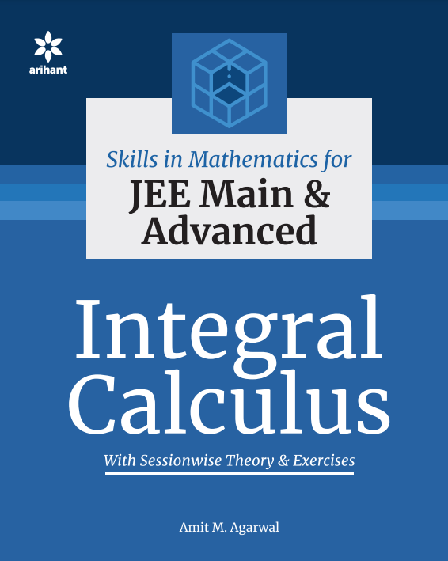
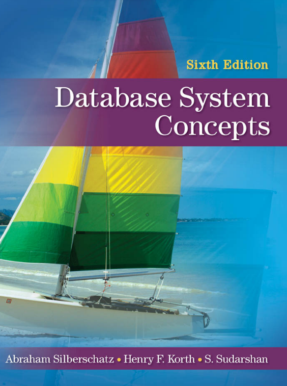
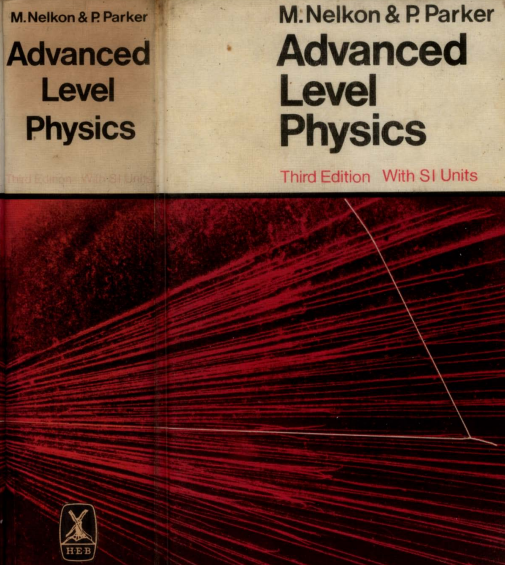
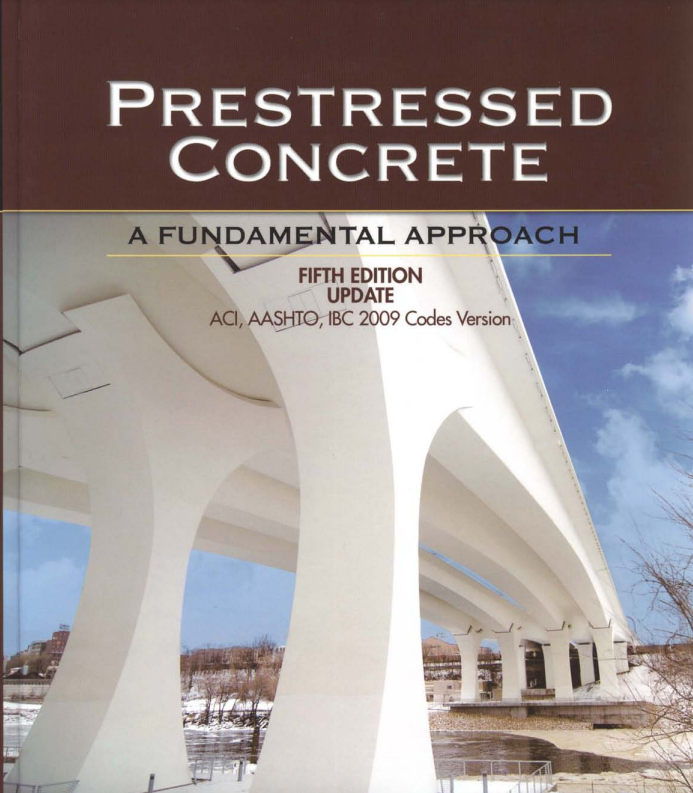

Integral Calculus
Amit M. Agarwal
Review
"Integral Calculus" by Amit M. Agarwal is a highly recommended textbook for students studying calculus at the undergraduate level. This book serves as an excellent resource for those looking to master the principles and applications of integral calculus. Agarwal's writing style is clear and concise, making complex mathematical concepts accessible to students of various backgrounds. The book begins with a thorough introduction to the fundamentals of integration, including different techniques such as substitution, integration by parts, and trigonometric integrals. It gradually progresses to more advanced topics, covering improper integrals, definite integrals, and applications of integration in physics and engineering. One of the strengths of this book is its extensive collection of solved examples and practice problems. These exercises help students develop a strong grasp of integral calculus through hands-on practice. The solutions provided are detailed and easy to follow, making it easier for students to understand the problem-solving process. Additionally, the book includes numerous diagrams and illustrations to aid in visualizing mathematical concepts, which can be particularly helpful for students who are more visually oriented. The real-world applications of integral calculus presented in the book also make it relevant and engaging for those interested in its practical uses. Amit M. Agarwal's "Integral Calculus" is not only a valuable resource for students but also a useful reference for educators and self-learners. Its comprehensive coverage of integral calculus, combined with its user-friendly approach, sets it apart as an excellent choice for anyone seeking to build a solid foundation in this essential branch of mathematics.In summary, "Integral Calculus" by Amit M. Agarwal is a well-structured, comprehensive, and student-friendly textbook that effectively teaches integral calculus concepts and applications. Whether you're a student struggling with the subject or an enthusiast looking to deepen your understanding, this book is a highly recommended resource.

Operating System Concepts
Abraham Silberschatz
Review
"Operating System Concepts" by Abraham Silberschatz is a widely acclaimed textbook that has been a go-to resource for students and professionals in the field of computer science for many years. This book provides an in-depth exploration of the fundamental concepts and principles underlying modern operating systems. One of the key strengths of this textbook is its comprehensive coverage of operating system topics. It begins with an introduction to the basic concepts, such as processes, memory management, and file systems, and gradually progresses to more advanced subjects like distributed systems and security. The content is well-structured and well-organized, making it accessible to both beginners and those with prior knowledge of the subject. Silberschatz's writing style is clear and concise, and he effectively conveys complex technical concepts in a way that is easy to understand. The book includes numerous examples and case studies that help illustrate key points and make the material more relatable. Another notable feature of "Operating System Concepts" is its emphasis on practical applications. It not only explains the theory behind operating systems but also provides insights into how these concepts are implemented in real-world operating systems like Linux and Windows. This practical approach is valuable for students and professionals who want to bridge the gap between theory and practice. The book also includes a wealth of exercises and problems at the end of each chapter, ranging from basic to challenging. These exercises provide opportunities for readers to reinforce their understanding of the material and hone their problem-solving skills. Additionally, the book offers supplementary resources, including online lecture slides and additional reading materials, making it suitable for both classroom use and self-study. One potential drawback of this textbook is that, given its comprehensive nature, it may be overwhelming for beginners or those seeking a more concise introduction to operating systems. However, for those looking for a comprehensive and in-depth exploration of the subject, "Operating System Concepts" is an excellent choice. In conclusion, Abraham Silberschatz's "Operating System Concepts" is a highly regarded and comprehensive textbook that effectively covers the essential principles and concepts of operating systems. Its practical approach, clear explanations, and abundance of examples make it a valuable resource for students and professionals studying or working in the field of computer science and operating systems.

Advanced Level Physics
Nelkon | Parker
Review
"Advanced Level Physics" by Nelkon and Parker is a classic textbook that has been a staple in the field of advanced physics education for many years. Designed for students pursuing A-level or advanced high school physics courses, this book covers a wide range of topics with depth and clarity. One of the standout features of this textbook is its comprehensive coverage of advanced physics concepts. From classical mechanics to electromagnetism, thermodynamics, and quantum mechanics, it provides a thorough understanding of the fundamental principles of physics. The explanations are clear and concise, making complex topics more approachable for students. The book also excels in its problem-solving approach. It offers numerous exercises and practice problems at various difficulty levels, allowing students to test their understanding and develop problem-solving skills. Detailed solutions are often provided for these exercises, which is immensely beneficial for self-assessment and learning. Nelkon and Parker do an excellent job of integrating real-world applications and examples throughout the book. This helps students connect theoretical physics concepts to practical situations, enhancing their appreciation of the subject's relevance in the world around them. Furthermore, the book is organized in a logical and systematic manner, making it easy for students to follow along and navigate through the content. The diagrams and illustrations are also helpful in visualizing complex physics phenomena, aiding in the comprehension of abstract concepts. While "Advanced Level Physics" is a robust resource for students, it is important to note that it assumes a certain level of prior knowledge in physics and mathematics. Therefore, it is best suited for those who have a strong foundation in basic physics principles and are looking to delve deeper into the subject at an advanced level. In summary, Nelkon and Parker's "Advanced Level Physics" is a highly respected and comprehensive textbook that caters to the needs of advanced physics students. Its rigorous content, problem-solving focus, and real-world applications make it an excellent choice for those pursuing a deeper understanding of physics at the advanced level.
